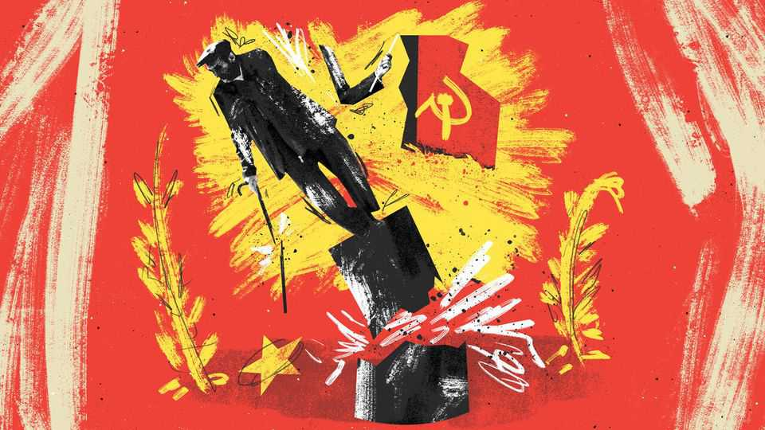

The coming fall of pensioner communism
Just like the Soviet kind, it is collapsing under its own contradictions

Oct 8th 2026
Vladimir Lenin distilled all politics to two questions: “Who? Whom?” Who will dominate, and whom will they dominate? Since 2010 the British state has offered simple answers. Who? Pensioners. Whom? Everyone else.
With the Conservative Party as its vanguard, pensioners bent the state to their will. The bits of it serving the working-age were squeezed, while those of concern to the elderly were protected. Pensioner preoccupations like leaving the European Union were pursued no matter the damage. Bungs such as free TV licences rained down. An old Marxist mantra was given a new twist: from each according to his ability; to each according to his age.
Yet change can come quickly to an ailing system, however indestructible it might seem. Alexei Yurchak, an anthropologist, titled an account of the collapse of the Soviet Union: “Everything Was Forever, Until It Was No More”. So it is in the 21st century with communism’s old-age cousin. Demographic change, economic struggles and inherent contradictions are set to bring about an end to a political settlement that once felt invincible. The end of pensioner communism is nigh.
When future historians tell the story of its fall, they will begin with a speech in Liverpool in September 2026. The speaker was a man who came not to destroy pensioner communism but to save it. Andy Burnham is more Mikhail Gorbachev, trying to buttress a failing edifice, than Boris Yeltsin, bringing in something chaotic and new. Britain’s new-ish prime minister pledged to overhaul the triple lock, a hitherto untouchable policy which raises state pensions each year by the highest of inflation, earnings or 2.5%.
Labour apparatchiks reacted like delegates at a Soviet congress. Mr Burnham softened things by saying no change would take place until 2030, after the next election. His party faithful applauded the triple lock’s retention and they applauded its repeal. Gorbachev launched perestroika, a suite of reforms to shake up the whole economy. Mr Burnham is shuffling cash for the elderly. The savings (perhaps £20bn, or $26bn, a year by 2040) will go towards a new National Care Service, ensuring geriatrics do not pay as much for old-age care. Think of it as perestroika for pensioners.
As Gorbachev found, however, attempts to change a system can topple it. Only a few weeks ago, the triple lock was an inevitable, inescapable fact of British politics: the sun rises in the east and sets in the west and Britain’s state pension rises each year by the higher of inflation, earnings or 2.5%. It was an impossible promise yet one that could never be tampered with. No more.
“Although the system’s collapse had been unimaginable before it began, it appeared unsurprising when it happened,” wrote Mr Yurchak. So it is for pensioner communism. If its policies were not impossible, they were iniquitous. Since age struggle has replaced class struggle, tax rates often come down to birth dates. A pensioner working in B&Q enjoys a marginal tax rate of 20%. Their newly graduated colleague, who fears that AI is busy eating their career prospects, loses 37% of their pay in deductions.
Britain faces fiscal consolidation, whether via tax rises or spending cuts. A generation ago, pensioners were among the poorest in society. When Margaret Thatcher left office in 1990, 40% were in poverty. Now, pensioner households often have higher incomes than working-age ones. “From each according to his ability; to each according to his age” cannot survive against this backdrop. Those of all ages must share the pain.
When age trumps class, demography determines election results. Big generations, such as the boomers, bullied governments at the ballot box. When they retired, Britain became a dictatorship of the pensionariat. Then, in 2020, millennials became the biggest cohort. And so the general election of 2024 was the first one someone born in the 1950s would have lost if they had voted with the bulk of their cohort. Actuarial tables can be as useful as any poll.
Systems die when people no longer truly believe in them. Late-stage pensioner communism is riddled with hypocrisy. After Mr Burnham’s speech, Conservative politicians who privately slate the triple lock ardently defended it. But like Soviet functionaries going home to listen to The Beatles on an illicit Sony Walkman, they know that the system is doomed.
Blind faith can be just as deadly. Outrageous demands are made of an already failing regime. Why shouldn’t the state pension be the same as the minimum wage, asks Prem Sikka, a Labour peer? That it would leave the pension budget equivalent to the state’s combined spending on education, defence, transport, the police, the courts, prisons and debt interest is no matter. Nothing is too good for the pensioners!
“It had never even occurred to me that in the Soviet Union anything could ever change. Let alone that it could disappear,” said Andrei Makarevich, a Russian singer. “There was a complete impression that everything was for ever.” What happens when for ever comes to an end? When a hegemonic idea crumbles, the vacuum can be filled only by others. Mr Burnham has proposed plenty. Rejoining the EU was once a mad dream. It could happen in a decade, if the prime minister is to be taken at his word. Ditto the dull-but-profound issue of voting reform. This is not only an opportunity for liberals. Taboos about racism could melt just as quickly. “Who? Whom?” could have a dark answer.
British politics feels stuck in an eternal present, with little true recollection of what the country once was and no idea of what it could be. Its norms are inevitable and impossible to shift, until they do. The answer to “Who? Whom?” can never change, even though it always does eventually. Pensioner communism is coming to an end. Everything is for ever, until it is no more. ■